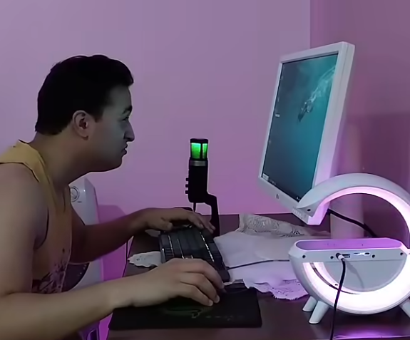

الغباء الإصطناعي يعيد إحياء الشاعر العظيم ابوهيبة
بقلم الهاكر: محمود حفيد الشاعر ابوهيبة
بعد ان مات شاعر الحرية ابوهيبة في سبيل الدفاع عن بيته, فقدت الأمة المنگولية عمودا من أعمدة الأدب الراقي. لحسن الحظ، إستطاع المركز البحثي في منگوليا تاون أن يصنع برنامج غباء إصطناعي باسم: ملهم GPT يحاكي أعمال الشاعر ابوهيبة. من أهم إنجازات هذا المركز هو إنشاء ديوان شعري كامل يشابه أعمال الأديب ابوهيبة.
